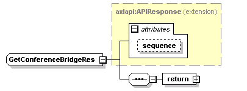
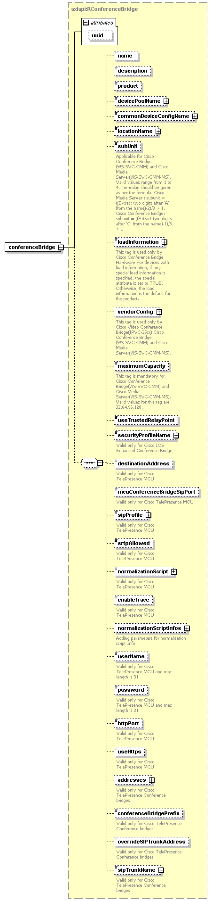

| diagram |  | ||||||||||||
| namespace | http://www.cisco.com/AXL/API/10.5 | ||||||||||||
| type | extension of axlapi:APIResponse | ||||||||||||
| properties |
|
||||||||||||
| children | return | ||||||||||||
| used by |
|
||||||||||||
| attributes |
|
||||||||||||
| source | <xsd:complexType name="GetConferenceBridgeRes"> <xsd:complexContent> <xsd:extension base="axlapi:APIResponse"> <xsd:sequence> <xsd:element name="return"> <xsd:complexType> <xsd:sequence> <xsd:element name="conferenceBridge" type="axlapi:RConferenceBridge"/> </xsd:sequence> </xsd:complexType> </xsd:element> </xsd:sequence> </xsd:extension> </xsd:complexContent> </xsd:complexType> |
| diagram | |||
| properties |
|
||
| children | conferenceBridge | ||
| source | <xsd:element name="return"> <xsd:complexType> <xsd:sequence> <xsd:element name="conferenceBridge" type="axlapi:RConferenceBridge"/> </xsd:sequence> </xsd:complexType> </xsd:element> |
| diagram |  | ||||||||||||
| type | axlapi:RConferenceBridge | ||||||||||||
| properties |
|
||||||||||||
| children | name description product devicePoolName commonDeviceConfigName locationName subUnit loadInformation vendorConfig maximumCapacity useTrustedRelayPoint securityProfileName destinationAddress mcuConferenceBridgeSipPort sipProfile srtpAllowed normalizationScript enableTrace normalizationScriptInfos userName password httpPort useHttps addresses conferenceBridgePrefix overrideSIPTrunkAddress sipTrunkName | ||||||||||||
| attributes |
|
||||||||||||
| source | <xsd:element name="conferenceBridge" type="axlapi:RConferenceBridge"/> |